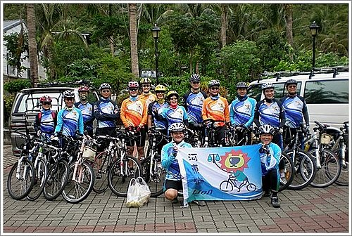

今年八月柏宏兄以二審票選第一名最優異表現榮調高雄高分院，因以前是打羽球同好，彼此均認識，但無往來，自柏宏兄調二審後，其辦公室與我緊鄰，又一牆之隔，每天下班之際，不論是晚上6時或是10時夜深人靜時刻，經過其辦公室前，門縫間一如往昔洩出燈光，柏宏兄仍埋首卷宗加班，敲門入內，言談中，得知又是騎單車同好，其告知在高雄地院成立了「河東獅」自行車社，也設立專屬網站，誠如河東獅部落格引言欄所述「登上單車，路有多寬，心就有多寬，讓我們帶您一同倘佯於青山綠水之中」，我完全認同，更進一步肯認「心有多寬，判決的角度內涵就多寬」。爾後在辦公室外廊見面時，彼此交談內容均以單車為重心，柏宏邀我參加河東獅97年11月8日旭海之行，我推稱年已逾半百，恐體力難支，蒙柏宏兄極力推薦，盛情可感，於是決定同往騎乘尋幽訪勝。
此行團員有高雄地院高院長、院長先生、賢銳、明富、明弘、柏宏、紀元、峻明、廣昇、能超、宗揚、武悅諸兄、 林 醫師益輝（兼隨隊醫生）及亮 文 小姐，連同本人，共15人，除本人外，個個均是單車好手，身強體健，毅力過人，此行蒙柏宏、能超、宗揚諸兄細緻之安排，大夥約定8日上午6時在鳳山市青年路地院宿舍集合（自行車上架），我於7日晚上11時許早早就寢，期能養精蓄銳，隔日大顯身手，惟天不從人願，就像小學生出門遠足般興奮過度，一夜難眠，誠屬可笑！
此行騎乘路線，由車城鄉四重溪大山溫泉餐廳出發，經過石門古戰場、牡丹水庫、牡丹國小、旭海海岸線（最佳賞景路線），分水嶺，至「紫灣」午餐；再越過高士佛山（海拔4百公尺，此行最高點）、牡丹水庫，回到大山溫泉餐廳（泡湯、晚餐）。
總結而言，此路段是單車族口耳相傳之A級路線，空氣超好，風景絕美，值得多次賞玩。尤其是牡丹國小到旭海，及旭海至港仔之海岸線，是最佳賞景路線，遠山巒峰層層相疊，錯落有致，近旁綠樹草原千里，草香撲鼻，願時間風景停格，幸福之感心中滿盈，眺望遠方淡藍色之太平洋，口中不禁吶喊香格里拉東岸，我們造訪妳了！下回待續。

河東獅車隊很榮辛 此次能邀請到「宗哥」 擔任「旭海練習曲」遠征行之隊長 其不僅於活動前1個月前往探勘 活動當天並一路領騎帶路 (雖然於紫灣午餐休息處， 大家都未錯過而迷路， 只有宗哥與武悅兄於大雨滂沱中迷路騎過頭） 其盛情衝勁，可見一般。 本次活動承蒙大家熱情參與， 全體團員騎車攻頂高士佛山均能順利圓滿成功。 在此代表全體攻頂之勇士與英雌，對 1.於風雨中在紫灣準備熱騰騰的雞湯相迎的尤老師， 2.慶功宴上提供紅酒同賀祝興之宗哥， 3.贊助活動不足透支款500元之宗哥 4.以無比驚人毅力攻頂成功的院長及亮文小姐 5.擔任補給重任之車友吳大及肉粽 致上最高的謝意及敬意。 總幹事 小獅 

宗哥， 您太客氣了，記得一路上您都保持在領先位置；而柏宏學長和我一直苦於追趕，我們甚至中途因雨而偷懶搭車，雖您謙稱年逾半百，但您絕對堪稱為單車好手。 小超